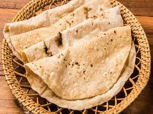

Chapati Recipe

Description
Chapati is a flat, mostly round shaped bread made from wheat flour
It is common in various forms in Asia and East Africa
Ingredients
Wheat flour
Water
Cooking oil
Steps
Mix the wheat flour with water
Knead the mixture until it forms an even malleable dough
Shape the dough into circular pieces
Apply cooking oil to the surface of the circular pieces
Roll the surface upon which oil is applied into round shaped chunks
Let the chunks stay for a while on a flat surface and cover with a dry cloth
Flatten the chunks with a rolling pin into circular shapes
Place the pieces, one at a time on a heated flat pan
Apply oil periodically to both surfaces as you flip the pieces over as they cook in mild heat
The chapati is ready when the pieces hardeen and attain a brownish outer layer